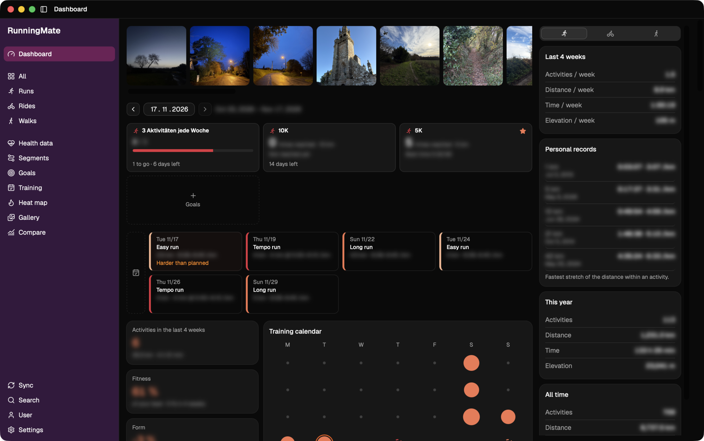

Dashboard

The dashboard is the start page: your latest photos, goals and planned sessions, the last four weeks at a glance, your volume over time and a feed of your activities, with your statistics on the side. Open it from the sidebar or with ⇧⌘D.
Wherever an activity shows on the dashboard (a photo, a day in the calendar, a feed entry, a record), click it to open it in the detail window. Previous and next in the detail window walk through the feed, as far as it is loaded.
Recent photos
The top row shows the 24 latest photos of all activities, newest first. Scroll it sideways. The row is left out while no activity has photos.
Moving back in time
Below the photos, the arrows move the dashboard four weeks back or forward, and the date field jumps to the four weeks up to a day you pick. The period shown is written beside them. Back to today returns to the current four weeks. You can't move past today.
The goals, the training sessions, the overview boxes, the training calendar, the volume chart and the feed follow the chosen day. The photos and the statistics on the side always show the present.
Goals
A row of chips, one for each goal that is running or reached, see Goals. Each chip shows the goal's name with the sport's icon, a star once it is reached, and the progress of the current period as value / target with a bar. Below that, the days left and what is left to do, or the day it was reached, and the number of periods reached in a row. For a goal in one activity that hasn't been reached yet, the value is the Best so far.
A goal for a distance in one activity (for example 10 km, or 10 km in under 50 minutes) shows instead how often it was reached (times reached), large, and below it the Best time: the fastest of those activities, scaled to the goal's distance.
Click a chip, or the box at the end of the row (Goals, or Set a goal while you have none), to open the Goals page.
Training week
If a training plan has sessions in the week shown or the week after, they show in a row below the goals: the day, the kind of session, its distance or content, and once done or past, how it went. Today's session is highlighted. Click a session, or the calendar button at the start of the row, to open the Training page.
Overview
Three boxes on the left:
- Activities in the last 4 weeks (Activities in these 4 weeks when you moved back in time): the number of activities of all sports, with their distance and time.
- Fitness: your fitness as a share of your best so far (of your best) and how much it changed in the four weeks.
- Form: your form as a share of your fitness, with its zone (for example Optimal or Fresh).
Click Fitness or Form to open the Health data page, which explains both.
Training calendar
Beside the boxes, the Training calendar shows the current week and the three before it, Monday first. A day you trained has a circle that grows with the time trained, measured against the longest day of the four weeks; today has a slightly larger dot. Hover a circle to see the day's activities with distance and time; click it to open the day's first activity.
Days with a planned training session get a ring: dashed in the colour of the kind of session while it is ahead, and in the colour of how it went once it is done or past. Hover it to see the session; click an empty ring to open the Training page.
Volume chart
A bar chart of the last 12 weeks or months, stacked by sport (runs, rides and walks, each in its colour), with the total on top of each bar. Choose what to add up with Distance, Time or Elevation, and the bars with Weekly or Monthly; both choices are kept. Hover a bar to see the numbers per sport and the total. Other activity types are left out.
Activity feed
Your activities of all sports, newest first, ten at a time; Show more loads the next ten. Each entry shows:
- the sport's icon, the title, date and time and the type,
- a star, a session mark or a trophy if the activity hit a goal, did a training session or is in the top 3 of a segment (hover them for the details),
- the comment,
- Distance, Pace (/km) (Speed for rides), Time and Elevation,
- a map of the route and up to five photos; with more, the last one shows how many are left.
Statistics on the side
The column on the right stays in view while you scroll. Pick the sport with the icons at the top (runs, rides or walks).
- Last 4 weeks: activities, distance, time and elevation per week, as the average of the last four weeks.
- Personal records: for each distance, the fastest stretch of that distance within any activity, with its time and pace (speed for rides) and the date. Click a record to open the activity.
- This year and All time: the number of activities, distance, time and elevation.